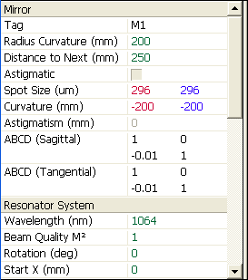
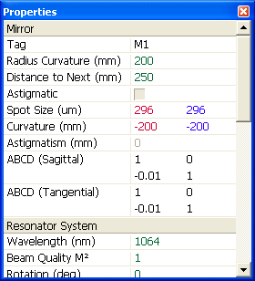
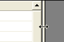
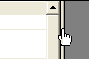
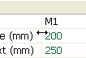
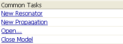

The Property Manager gives access to all of the relevant optic, system, and display window properties. The properties are split up into different groups including those relevant to the selected optic, the system, and the active window.
|  |  |
The Property Manager can be shown either within the LaserCanvas window (the default), or as a separate floating window.
To show or hide the Property Manager, select menu Tools | Properties or select the  Properties
Properties
To toggle the Property Manager between docked and in a floating window, select menu Tools | Dock Properties.
When the Property Manager is docked, you can
|  |  |  |
The properties displayed within the Property Manager are divided into the following groups:
Which of the groups, and which of the properties within each group, are accessible at any time depend on the visible window and the optics selected within the canvas. The Common Tasks are always visible.
Each group can be expanded or collapsed by clicking the group heading. If a group of properties is collapsed, a "+" symbol is displayed in the group heading.
|  |
Each property has a title, shown in the left-hand column, and a value, shown in the right. The exceptions are the Common Task commands, which span the entire width of the window.
For editable properties, clicking in the right-hand column allows you to edit the property value. Press the Enter key, or click outside the edit field, to accept the new value. Press the Escape key to cancel the input.
If the entered value of an edit field contains an error, the edit field remains visible, with the contents selected. If there is an error in an equation, the status bar will indicate the error.
Optic and system properties that can be entered as equations usually show the current value of the equation. To display the source equation for these items, select menu Tools | Property Equations or select the  Equations button on the toolbar.
Equations button on the toolbar.
Some properties are read-only and cannot be edited.